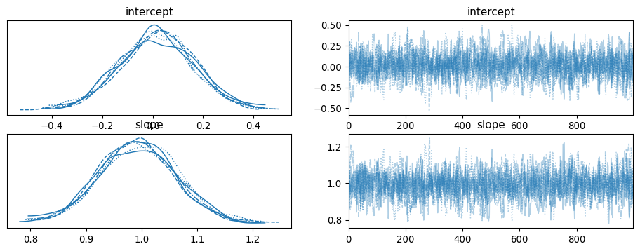

import pymc as pm
import nutpie
import pandas as pd
coords = {"observation": range(3)}
with pm.Model(coords=coords) as model:
# Prior distributions for the intercept and slope
intercept = pm.Normal("intercept", mu=0, sigma=1)
slope = pm.Normal("slope", mu=0, sigma=1)
# Likelihood (sampling distribution) of observations
x = [1, 2, 3]
mu = intercept + slope * x
y = pm.Normal("y", mu=mu, sigma=0.1, observed=[1, 2, 3], dims="observation")Usage with PyMC models
This document shows how to use nutpie with PyMC models. We will use the pymc package to define a simple model and sample from it using nutpie.
Installation
The recommended way to install pymc is through the conda ecosystem. A good package manager for conda packages is pixi. See for the pixi documentation for instructions on how to install it.
We create a new project for this example:
pixi new pymc-exampleThis will create a new directory pymc-example with a pixi.toml file, that you can edit to add meta information.
We then add the pymc and nutpie packages to the project:
cd pymc-example
pixi add pymc nutpie arvizYou can use Visual Studio Code (VSCode) or JupyterLab to write and run our code. Both are excellent tools for working with Python and data science projects.
Using VSCode
- Open VSCode.
- Open the
pymc-exampledirectory created earlier. - Create a new file named
model.ipynb. - Select the pixi kernel to run the code.
Using JupyterLab
- Add jupyter labs to the project by running
pixi add jupyterlab. - Open JupyterLab by running
pixi run jupyter labin your terminal. - Create a new Python notebook.
Defining and Sampling a Simple Model
We will define a simple Bayesian model using pymc and sample from it using nutpie.
Model Definition
In your model.ipypy file or Jupyter notebook, add the following code:
Sampling
We can now compile the model using the numba backend:
compiled = nutpie.compile_pymc_model(model)
trace = nutpie.sample(compiled)Sampler Progress
Total Chains: 6
Active Chains: 0
Finished Chains: 6
Sampling for now
Estimated Time to Completion: now
| Progress | Draws | Divergences | Step Size | Gradients/Draw |
|---|---|---|---|---|
| 1400 | 0 | 0.59 | 3 | |
| 1400 | 0 | 0.65 | 9 | |
| 1400 | 0 | 0.55 | 1 | |
| 1400 | 0 | 0.58 | 15 | |
| 1400 | 0 | 0.67 | 7 | |
| 1400 | 0 | 0.58 | 3 |
Alternatively, we can also sample through the pymc API:
with model:
trace = pm.sample(model, nuts_sampler="nutpie")While sampling, nutpie shows a progress bar for each chain. It also includes information about how each chain is doing:
- It shows the current number of draws
- The step size of the integrator (very small stepsizes are typically a bad sign)
- The number of divergences (if there are divergences, that means that nutpie is probably not sampling the posterior correctly)
- The number of gradient evaluation nutpie uses for each draw. Large numbers (100 to 1000) are a sign that the parameterization of the model is not ideal, and the sampler is very inefficient.
After sampling, this returns an arviz InferenceData object that you can use to analyze the trace.
For example, we should check the effective sample size:
import arviz as az
az.ess(trace)<xarray.Dataset> Size: 16B
Dimensions: ()
Data variables:
intercept float64 8B 1.517e+03
slope float64 8B 1.517e+03and take a look at a trace plot:
az.plot_trace(trace);
Choosing the backend
Right now, we have been using the numba backend. This is the default backend for nutpie, when sampling from pymc models. It tends to have relatively long compilation times, but samples small models very efficiently. For larger models the jax backend sometimes outperforms numba.
First, we need to install the jax package:
pixi add jaxWe can select the backend by passing the backend argument to the compile_pymc_model:
compiled_jax = nutpie.compiled_pymc_model(model, backend="jax")
trace = nutpie.sample(compiled_jax)Or through the pymc API:
with model:
trace = pm.sample(
model,
nuts_sampler="nutpie",
nuts_sampler_kwargs={"backend": "jax"},
)If you have an nvidia GPU, you can also use the jax backend with the gpu. We will have to install the jaxlib package with the cuda option
pixi add jaxlib --build 'cuda12'Restart the kernel and check that the GPU is available:
import jax
# Should list the cuda device
jax.devices()Sampling again, should now use the GPU, which you can observe by checking the GPU usage with nvidia-smi or nvtop.
Changing the dataset without recompilation
If you want to use the same model with different datasets, you can modify datasets after compilation. Since jax does not like changes in shapes, this is only recommended with the numba backend.
First, we define the model, but put our dataset in a pm.Data structure:
with pm.Model() as model:
x = pm.Data("x", [1, 2, 3])
intercept = pm.Normal("intercept", mu=0, sigma=1)
slope = pm.Normal("slope", mu=0, sigma=1)
mu = intercept + slope * x
y = pm.Normal("y", mu=mu, sigma=0.1, observed=[1, 2, 3])We can now compile the model:
compiled = nutpie.compile_pymc_model(model)
trace = nutpie.sample(compiled)Sampler Progress
Total Chains: 6
Active Chains: 0
Finished Chains: 6
Sampling for now
Estimated Time to Completion: now
| Progress | Draws | Divergences | Step Size | Gradients/Draw |
|---|---|---|---|---|
| 1400 | 0 | 0.64 | 1 | |
| 1400 | 0 | 0.61 | 11 | |
| 1400 | 0 | 0.68 | 3 | |
| 1400 | 0 | 0.55 | 9 | |
| 1400 | 0 | 0.57 | 9 | |
| 1400 | 0 | 0.65 | 3 |
After compilation, we can change the dataset:
compiled2 = compiled.with_data(x=[4, 5, 6])
trace2 = nutpie.sample(compiled2)Sampler Progress
Total Chains: 6
Active Chains: 0
Finished Chains: 6
Sampling for now
Estimated Time to Completion: now
| Progress | Draws | Divergences | Step Size | Gradients/Draw |
|---|---|---|---|---|
| 1400 | 0 | 0.42 | 7 | |
| 1400 | 0 | 0.35 | 27 | |
| 1400 | 0 | 0.42 | 13 | |
| 1400 | 0 | 0.45 | 3 | |
| 1400 | 0 | 0.40 | 3 | |
| 1400 | 0 | 0.39 | 19 |